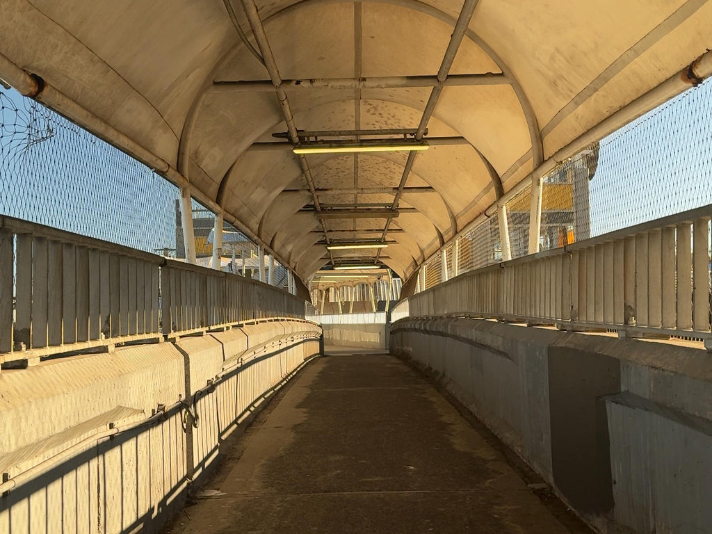
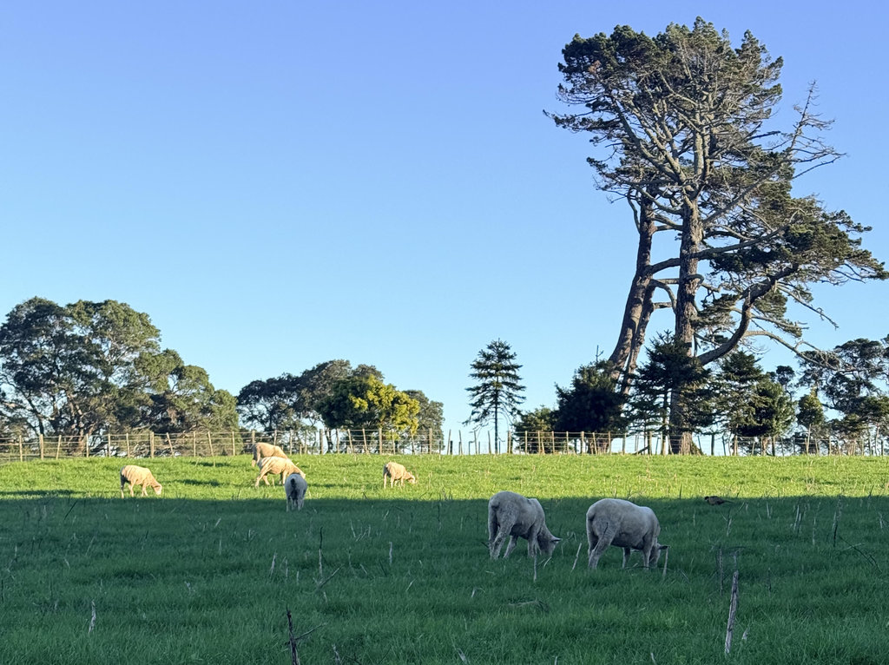
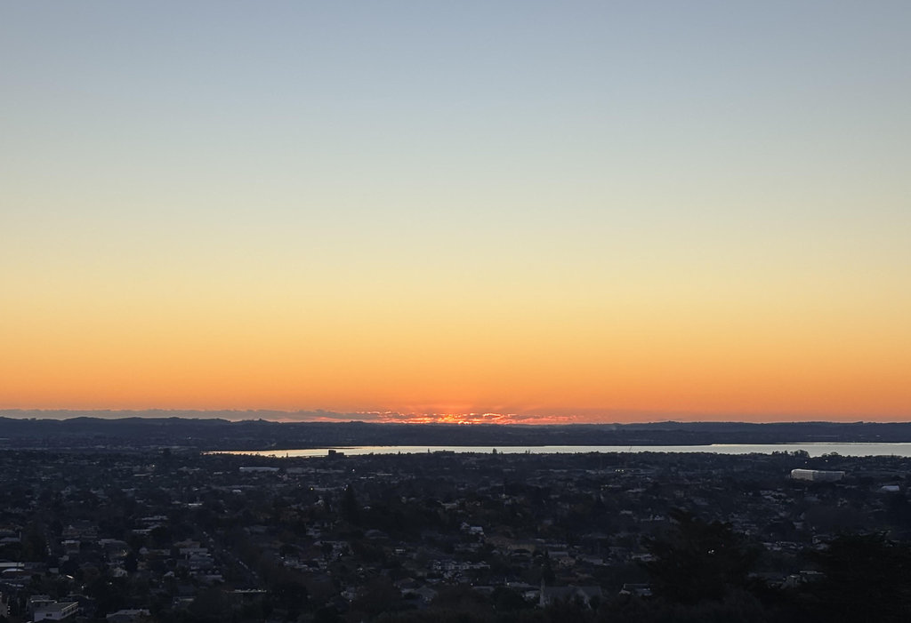

漫步 One Tree Hill，追一场冬日的日落
奥克兰的冬天，总有一种安静的魅力。阳光不像夏日那样热烈，却把天空洗得格外通透。这一天，我们从 Auckland University 附近搭乘 70 路公交，目的地是久负盛名的 One Tree Hill。
也许是第一次来，也许是一路聊天太过投入，我们不知不觉坐过了站。索性没有懊恼，决定把这段意外变成旅程的一部分。多走一些路，总能遇见地图上没有标注的风景。
沿途最吸引我的，是一座横跨高速公路的人行天桥。桥下车流如河，汽车飞驰而过，桥上却只有稀稀落落的行人。站在桥中央，一边是喧嚣与速度，一边是宁静与步伐，两种节奏在这里短暂交汇，颇有几分意味。

抵达 One Tree Hill 后，眼前的景象一下子开阔起来。起伏的草坡一直延伸到天边，羊群悠闲地低头吃草，几头牛散落在远处，仿佛完全不在意游客的到来。有人牵着狗慢慢散步，有人坐在草地上聊天，也有人和我们一样，只是静静地望着远方。城市的节奏，在这里仿佛被按下了慢放键。

朋友查阅资料后告诉我，如今的 One Tree Hill，其实已经没有那棵著名的树了。山顶曾先后生长过几棵松树，但都因各种原因消失。2000 年，最后一棵因曾遭人为破坏而日渐衰败的蒙特利松被移除，自此，“One Tree Hill”这个名字只留在了历史和人们的记忆里。如今山顶依旧矗立着那座庄严的方尖碑，而那棵曾赋予这座山名字的树，却成为了一段关于自然、历史与文化的故事。
我们一路走到山顶，来到方尖碑下。站在这里，奥克兰仿佛在脚下缓缓展开。远处的 Sky Tower 高高耸立，在城市天际线上格外醒目；海面之外，静静卧着 Rangitoto Island，那座火山岛像一幅剪影，守望着豪拉基湾。
我架起相机，等待太阳缓缓落向地平线。夕阳一点一点染红云层，金色的光洒在草地、牛羊和远方的城市建筑上，也洒在每一个停下来欣赏风景的人身上。快门按下的一瞬间，仿佛把整个下午的宁静都收藏了起来。

随着最后一缕阳光消失，冬日的寒意也悄悄袭来。我们裹紧外套，步行约 1.9 公里赶往公交车站。回到市区后，又沿着熟悉的街道走了约 900 米，终于回到了家。
一天的行程没有惊心动魄，也没有刻意安排太多景点。只是搭错了一站公交，走过一座天桥，看见了一群悠闲的牛羊，在方尖碑下眺望整座城市，安静地等了一场日落。
旅行的意义，或许从来都不在于去了多少地方，而是在某个平凡的午后，发现这个世界依然有许多值得慢慢走、慢慢看的风景。